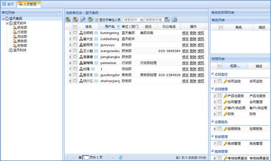
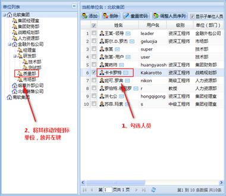
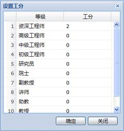

人员管理主要是维护单位（部门）的人员信息，包括添加人员，修改人员，删除人员，人员顺序调整以及搜索操作。
在系统菜单里选择人员管理，工作区会显示人员管理模块信息。工作区左边显示的是单位目录，右边显示人员列表区，人员列表区上面是工具栏，如下图所示：

图 人员管理
1、添加人员
在单位目录中选择一个单位，通过单位目录右键菜单的“添加人员”或人员列表工具栏的“添加人员”按钮或人员列表右键菜单“添加人员”添加。在添加人员界面通过填写用户名和密码为人员创建用户。
注意：
1、添加人员界面的性别默认为“男”，可以手工修改。
2、添加人员界面选择岗位时，一个人可以有多个岗位。
3、添加人员界面单位电话、家庭电话允许填入数字和“-”，但是不能超过三十位（“-”的个数不能超过两个，例如：010-88568905-99）。
2、修改人员
在单位列表中选择一个人员，通过人员列表右键菜单的“修改人员”或人员列表操作区的“修改”修改。在修改人员界面可以通过填写或修改用户名、密码来创建或修改用户。
注意：
1、修改人员的“所属单位名称”可以通过“选择单位”按钮修改，也就是说人员可以从一个单位（或部门）调到另一个单位（或部门）。
2、修改人员界面选择岗位时一个人可以有多个岗位。
3、删除人员
（1）、删除一个人员：在人员列表中选择一个人员，通过人员列表工具栏的“删除”按钮或人员列表右键菜单的“删除人员”或人员列表操作区的“删除”删除。
（2）、批量删除人员：在人员列表中选择多个要删除的人员，通过工具栏的“删除”按钮删除。
4、重置密码
在人员列表中选择一个或多个人员，通过工具栏的“重置密码”可以重置一个人员或多个人员的用户密码。
1、编辑角色、权限
（1）给一个人员授权：在人员列表中选择一个人员，在角色和权限列表中选择相应的角色或权限。
（2）给多个人员授权：在人员列表中选择多个人员，在角色和权限列表中选择相应的角色或权限。
2、查看角色、权限
（1）查看一个人员的权限：在人员列表中选择一个人员，在角色和权限列表中显示相应的角色、权限。
（2）多个人员权限的对比：在人员列表中选择多个人员，在角色和权限列表中可以查看选中人员相同以及不同的角色、权限。
注意：
其中表示选中人员不同的角色、权限，表示选中人员相同的角色、权限。
1、在单位目录中选择一个单位，然后选择人员列表工具栏的“调整人员序列”按钮。
2、在弹出的调整人员序列界面列表中选择一个要调整顺序的人员，然后根据需要通过“最上”、“上移”、“下移”、“最下”按钮来调整人员的顺序。人员顺序调整完毕后，选择“关闭”按钮返回人员管理界面。
将人员列表中的人员向单位目录中拖拽，如下图所示：

图 拖拽调整人员
注意：
拖拽时进行了人员重名判断，即在一个单位部门中不能出现重名的人员。
在单位目录中选择一个单位，然后在人员列表工具栏选择“搜索条件”，填写“搜索条件值”，最后选择“搜索”按钮搜索。
在单位目录中选择一个单位，然后在人员列表工具栏点击“设置工分”，在弹出的设置工分窗口中点击“工分”项下的各个输入框，为不同级别的人员设置工分。如下图所示：

图 设置工分